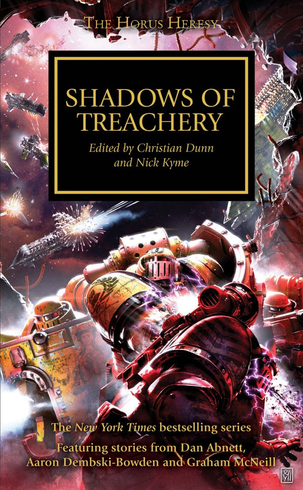

PRINCE OF CROWS

Author: Aaron Dembski-Bowden
Format: Novella
As the Thramas Crusade reaches a crisis, Sevatar and the Night Lords struggle to hold their divided Legion together. The First Captain has his own plan for its survival.
Listed in: Shadows of Treachery.
Introduction reviewed against Black Library’s description on 2026-09-27. The publisher page may contain spoilers.
Publication facts: publisher source, checked 2026-09-26.
Open this work in the interactive Archive to track reading progress and explore related works.
Take the three-question memory check for this work. The quiz contains story spoilers.